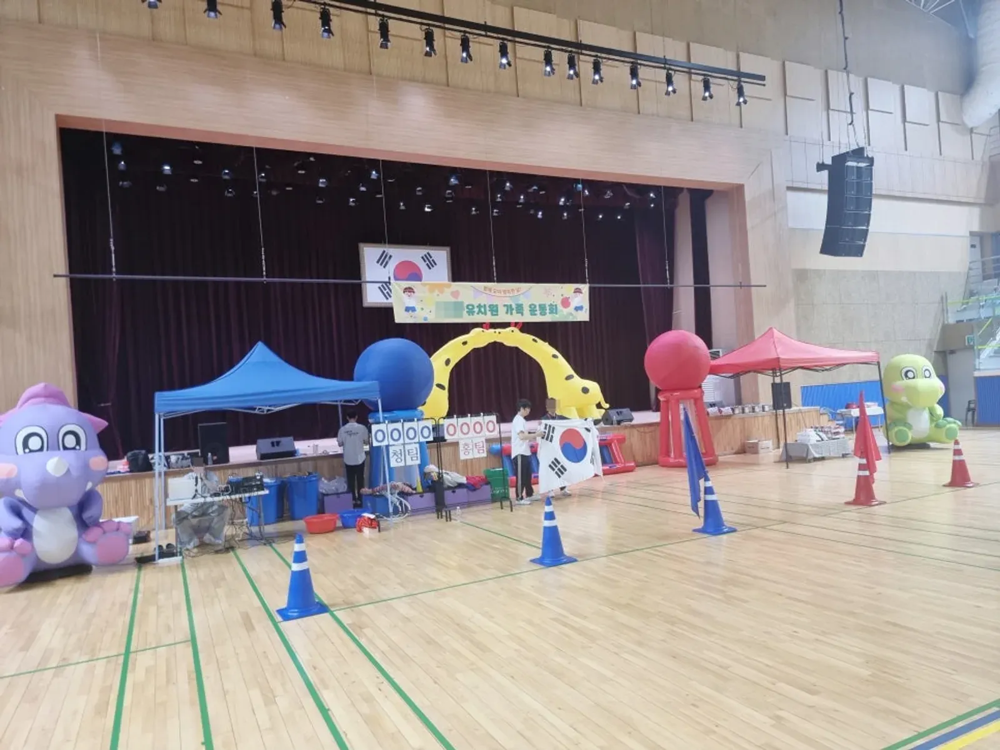

의정부 어린이집 운동회를 준비할 때는 순서표를 1부 공식행사 · 2부 단체화합 게임 · 시상식과 폐회식 세 덩어리로 나누는 것부터 시작하면 쉽습니다. 그다음 반별 연령에 맞는 게임과 부모님 · 조부모님이 함께하는 게임을 채워 넣습니다. 예그리나는 남양주 별내 사무실에서 의정부시청까지 차로 약 10분 · 8.3km 거리라, 행사 당일 일찍 도착해 세팅을 마칠 수 있습니다.

- 가족한마음 체육대회 순서표는 1부 공식행사, 2부 단체화합 · 대표자 게임, 시상식 · 폐회식의 세 덩어리로 짭니다.
- 영아반 · 유아반은 할 수 있는 게임이 달라 연령별 게임을 따로 둡니다.
- 부모님 · 조부모님 게임이 있어야 가족이 끝까지 자리를 지킵니다.
- 야외 운동장이 어렵다면 실내 체육관 운동회로도 진행할 수 있습니다.
- 예그리나 사무실에서 의정부시청까지 차로 약 10분(막히지 않을 때)입니다.
1. 의정부 어린이집 운동회, 순서표는 세 덩어리로
어린이집 운동회는 아이들의 집중 시간이 짧아 한 순서가 길어지면 금세 흐트러집니다. 그래서 큰 흐름을 먼저 나누고, 그 안을 짧은 게임으로 채우는 방식이 편합니다.
| 부분 | 들어가는 순서 | 준비할 것 |
|---|---|---|
| 1부 공식행사 | 입장 · 개회 인사 · 준비운동 | 입장 음악 · 반 깃발 · 인사 순서 |
| 2부 단체화합 · 대표자 게임 | 전체 게임 · 연령별 게임 · 부모님 게임 | 게임도구 · 팀 구분 · 점수판 |
| 시상식 · 폐회식 | 결과 발표 · 기념 촬영 · 퇴장 | 시상 방법 · 정리 순서 |
순서표를 짤 때는 물 마시는 시간과 화장실 시간을 따로 넣어 두세요. 아이들이 많을수록 이 시간이 생각보다 길게 걸립니다.
2. 연령별 게임 고르는 기준
같은 원 안에서도 영아반과 7세반은 몸 쓰는 정도가 크게 다릅니다. 모든 반이 같은 게임을 하면 어린 반은 따라가기 어렵고, 큰 반은 금방 지루해합니다.
- 영아반 — 부모님과 함께 걷거나 공을 옮기는 짧은 게임. 경쟁보다 참여가 목표입니다.
- 유아반 — 달리기 · 공 굴리기 · 이어달리기처럼 규칙이 단순한 팀 게임.
- 전체 게임 — 대형 공 굴리기나 단체 줄다리기처럼 모두가 한 번에 움직이는 게임.
- 부모님 · 조부모님 게임 — 어른이 주인공이 되는 순서를 하나 이상 넣습니다.

3. 야외냐 실내냐 — 장소 정하기
가족한마음 체육대회는 넓은 야외 운동장에서 많이 하지만, 날씨와 대관 사정에 따라 실내 체육관에서 할 수도 있습니다. 예그리나의 어린이집 · 유치원 운동회에는 실내 체육관 운동회도 들어 있습니다.
| 확인할 것 | 야외 운동장 | 실내 체육관 |
|---|---|---|
| 바닥 | 흙 · 잔디 상태, 돌멩이 | 미끄럼, 매트가 필요한 자리 |
| 그늘 · 쉼터 | 천막이 필요한 자리 | 관람석 위치 |
| 놀이기구 | 에어바운스 놓을 평평한 자리 | 천장 높이 · 출입문 크기 |
| 날씨 | 비 · 바람 예보 확인 | 날씨 영향이 적음 |
| 차량 | 장비 내릴 자리 | 건물 앞 하차 자리 |

4. 의정부에서 준비할 때 알아 둘 것
예그리나 사무실은 남양주 별내에 있고, 의정부시청까지 차로 약 10분 · 8.3km(막히지 않을 때)입니다. 원 위치가 시내 어디든(민락동 · 신곡동 · 호원동 · 장암동 · 금오동 등) 행사 당일 일찍 도착해 장비 자리를 잡고 세팅합니다. 출퇴근 시간에는 더 걸릴 수 있어, 시작 시간이 이르면 도착 시간을 상담에서 따로 맞춥니다.
장소가 원 밖의 운동장이나 체육관이라면 대관한 곳의 주소, 차가 들어갈 수 있는 길, 전기를 쓸 수 있는 곳을 미리 알려 주세요. 에어바운스는 송풍기에 전기가 필요합니다. 의정부 안내는 의정부 행사 안내 페이지에 있습니다.
5. 어린이집 운동회 견적 문의 항목
자동 견적서에서 필요한 것만 골라 보내 주시면 그 목록으로 상담을 시작합니다. 자동 견적서는 금액을 보여 주지 않고, 비용은 인원 · 장소 · 프로그램에 따라 상담 후 안내합니다.
| 항목 | 알려 주시면 좋은 것 |
|---|---|
| 어린이집 · 유치원 운동회 | 반 수 · 원아 수 · 가족 참가 여부 |
| 운동회 게임도구 | 꼭 하고 싶은 게임 · 작년에 한 게임 |
| 에어바운스 | 놓을 자리 크기 · 전기 위치 |
| 환영 아치 · 포토존 | 입구 위치 |
| 천막 · 의자 | 그늘이 필요한 자리 · 어른 좌석 수 |
운동회 업체를 처음 고르신다면 남양주 운동회 업체 고르는 법의 질문 목록이 도움이 됩니다.
자주 묻는 질문
어린이집 운동회는 몇 시간 정도로 잡나요?
원아 연령과 반 수에 따라 다릅니다. 어린 반이 많으면 짧게 잡는 편이 좋고, 순서표를 보며 상담에서 함께 맞춥니다.
비가 오면 실내로 바꿀 수 있나요?
실내 체육관을 함께 알아 두시면 바꿀 수 있습니다. 언제까지 결정할지는 상담에서 정합니다.
부모님이 참가하지 않는 운동회도 하나요?
네. 원아만 참가하는 운동회라면 부모님 게임 대신 연령별 게임과 전체 게임을 늘려 짭니다.
운동회 날 원에서 따로 준비할 것은 무엇인가요?
반별 명단과 팀 구분, 시상 방법, 아이들 물과 여벌 옷, 비상 연락망은 원에서 챙겨 주세요. 학부모 공지에는 시작 시간 · 복장 · 주차 안내를 넣으면 당일 문의가 줄어듭니다. 프로그램과 게임도구, 진행은 상담에서 정한 대로 예그리나가 준비합니다.